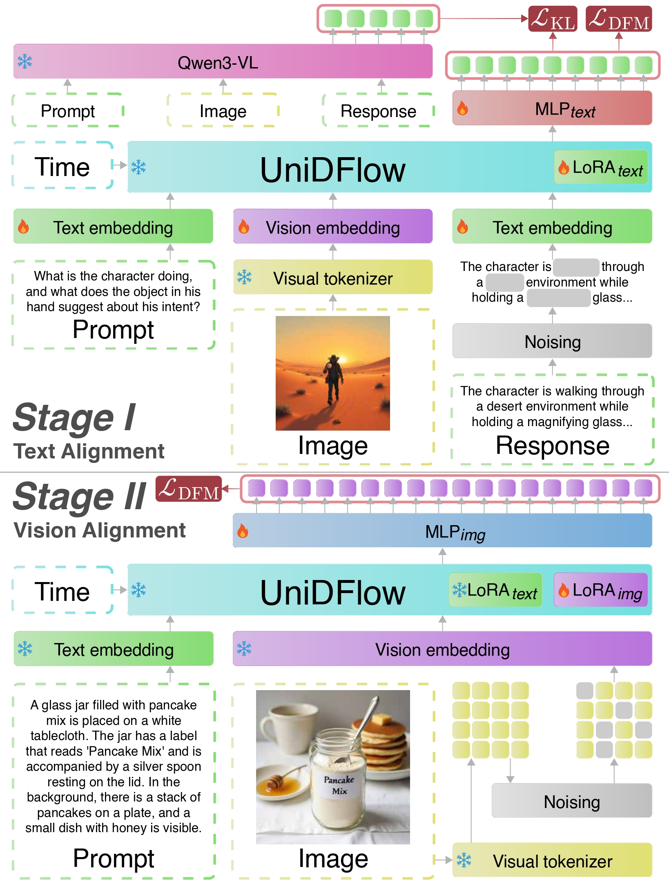
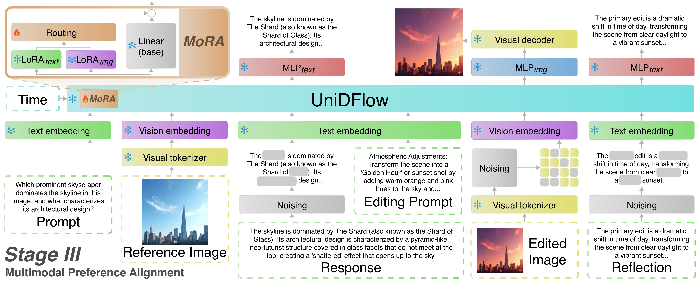
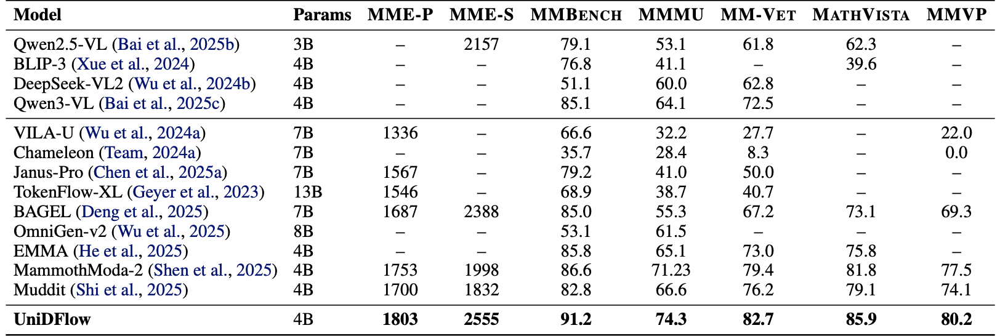
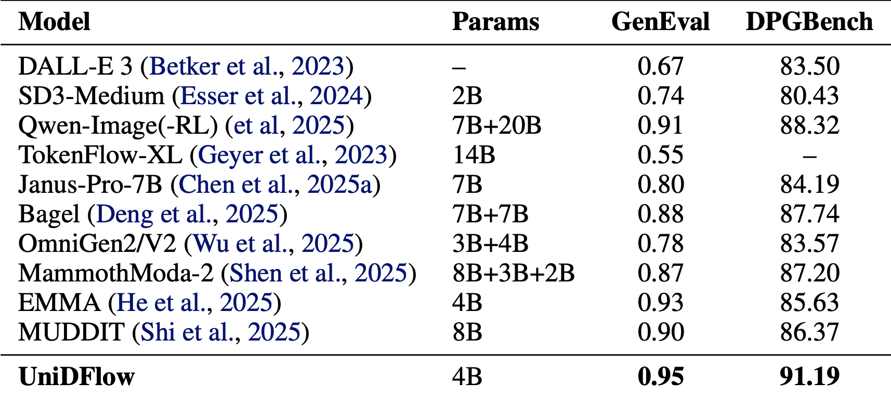
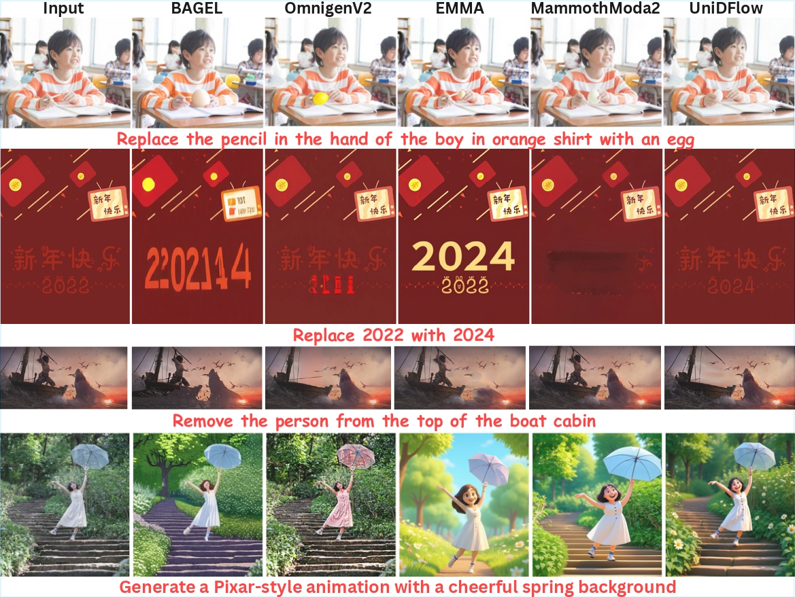
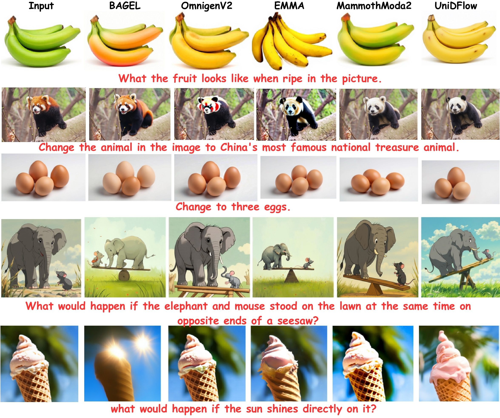
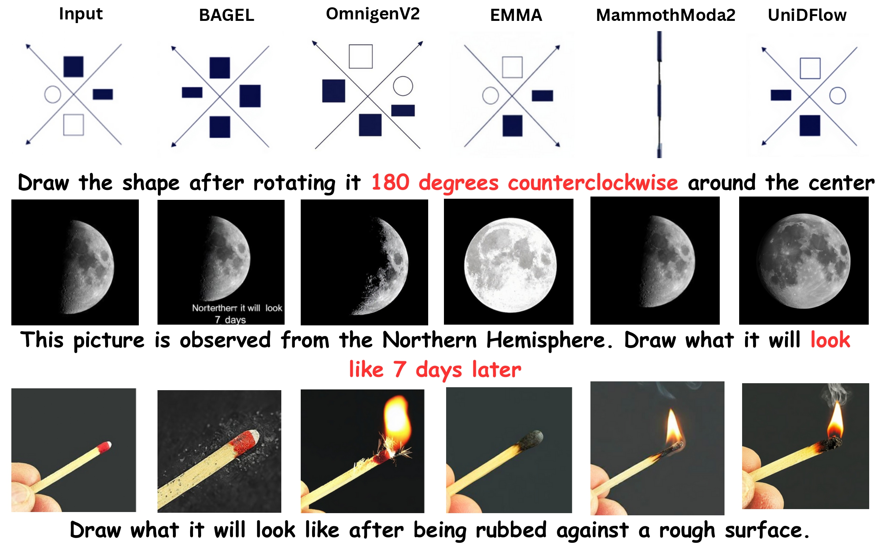
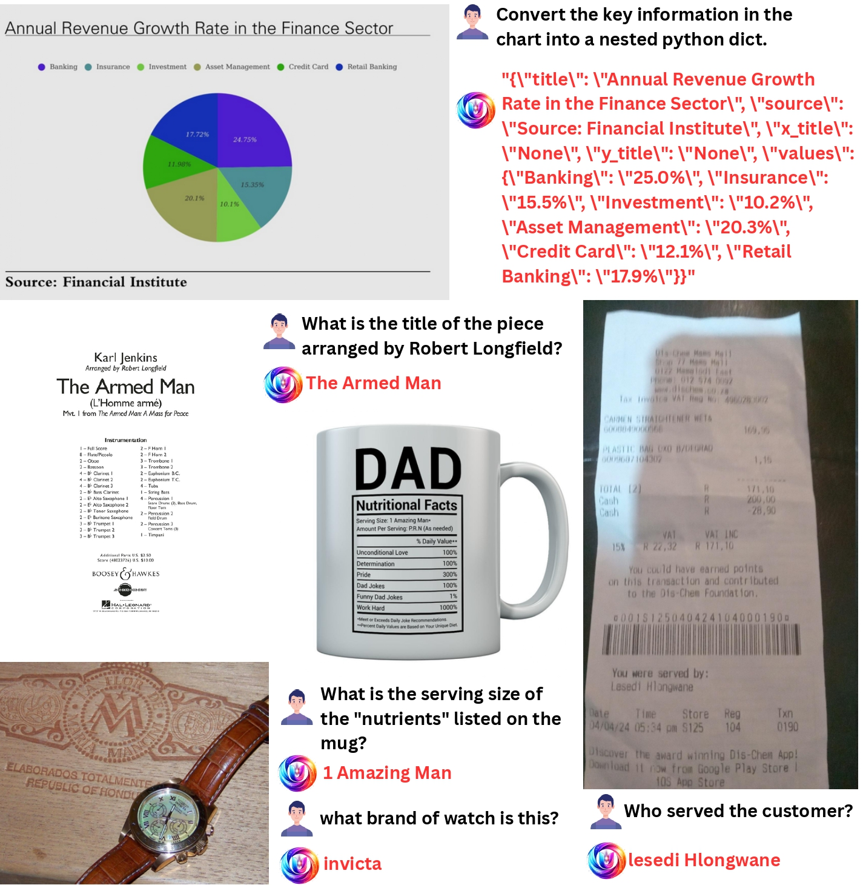

Best of Both Worlds: Multimodal Reasoning and Generation
via
Unified Discrete Flow Matching
ICML 2026
Abstract
We propose UniDFlow, a unified discrete flow-matching framework for multimodal understanding, generation, and editing. UniDFlow decouples understanding and generation via task-specific low-rank adapters, avoiding objective interference and representation entanglement, while a novel reference-based multimodal preference alignment optimizes relative outcomes under identical conditioning, improving faithfulness and controllability without large-scale retraining. UniDFlow achieves SOTA performance across eight benchmarks and exhibits strong zero-shot generalization to tasks including inpainting, in-context image generation, reference-based editing, and compositional generation, despite no explicit task-specific training.
Method
UniDFlow is trained with a three-stage pipeline designed to bridge the gap between high-level reasoning and high-fidelity generation.

Stage I: Text Alignment (Reasoning Foundation)
The first stage focuses exclusively on multimodal understanding to establish a strong reasoning foundation.
- Objective: We align a frozen vision-language backbone to follow visual instructions using a discrete flow-matching objective.
- Mechanism: We introduce and train specialized LoRAtext adapters while keeping the base model parameters frozen.
- Stabilization: To prevent semantic drift and ensure our model retained its original linguistic intelligence, we regularize the training with a KL divergence loss.
Stage II: Vision Alignment (Generative Capability)
Stage II endows the model with the ability to synthesize images.
- Objective: We adapt the model for conditional generation within a discrete visual token space. By operating in a discrete latent space, we enable high-fidelity image synthesis that seamlessly integrates with the backbone's token-based architecture.
- Isolation: To avoid objective interference, we keep Stage I reasoning adapters frozen and introduce a separate set of LoRAimage adapters.

Stage III: Multimodal Preference Alignment (Refined Editing)
Stage III improves reasoning-based capabilities to enable instruction-based image editing and complex reasoning tasks.
- Dynamic routing (MoRA): Since understanding and generation require different specializations, we propose a lightweight Mixture-of-LoRA (MoRA) router, which dynamically composes our task-specific adapters at every step of the diffusion process.
- mRef-DPO alignment: We introduce a novel multimodal Reference-based Direct Preference Optimization (mRef-DPO) method to teach the model to distinguish between faithful edits and subtle errors by comparing outcomes against a frozen reference policy and a visual reference image.
- Structured reasoning: We incorporate reflection traces into this stage, requiring the model to "think through" the editing process before generating pixels, which significantly improves its ability to handle geometric, physical, and temporal transformations.
Quantitative Results

Multimodal understanding results report UniDFlow’s performance across a broad suite of benchmarks, covering both perception- and reasoning-oriented evaluations. For UniDFlow (4B), we observe strong results across all benchmarks, demonstrating competitive performance on both general multimodal QA and more reasoning-intensive visual tasks. We further show that UniDFlow consistently outperforms comparable unified baselines. For example, UniDFlow achieves gains over BAGEL of +6.9% on MME-P and +7.0% on MME-S, indicating improved perceptual and reasoning consistency.
Text-to-image generation results show that UniDFlow (4B) outperforms same-scale unified competitors and even larger generative models.Qualitative Results: Image Editing


Qualitative comparison of compositional text-to-image generation and editing. Prompts require precise grounding of attributes and spatial relations (red text). UniDFlow consistently adheres to these constraints while maintaining realistic structure and visual fidelity, outperforming prior unified baselines.
Qualitative Results: Text-to-Image Generation

Image generation with UniDFlow.
Qualitative Results: Reasoning-Based Image Editing

Reasoning-driven image editing, highlighting temporal, geometric, and physical transformations handled by UniDFlow.
Qualitative Results: Image Understanding

Image-to-text generated results with UniDFlow.
BibTeX
@inproceedings{susladkar2026best,
title={Best of Both Worlds: Multimodal Reasoning and Generation via Unified Discrete Flow Matching},
author={Susladkar, Onkar and Prakash, Tushar and Deshmukh, Gayatri and Nguyen, Kiet A. and Zhang, Jiaxun and Juvekar, Adheesh and Bao, Tianshu and Chai, Lin and Mittal, Sparsh and Dhillon, Inderjit S and Lourentzou, Ismini},
booktitle={Proceedings of the International Conference on Machine Learning (ICML)},
year={2026}
}